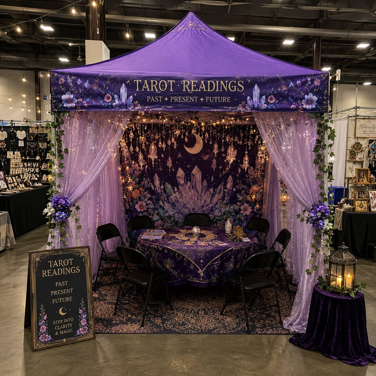
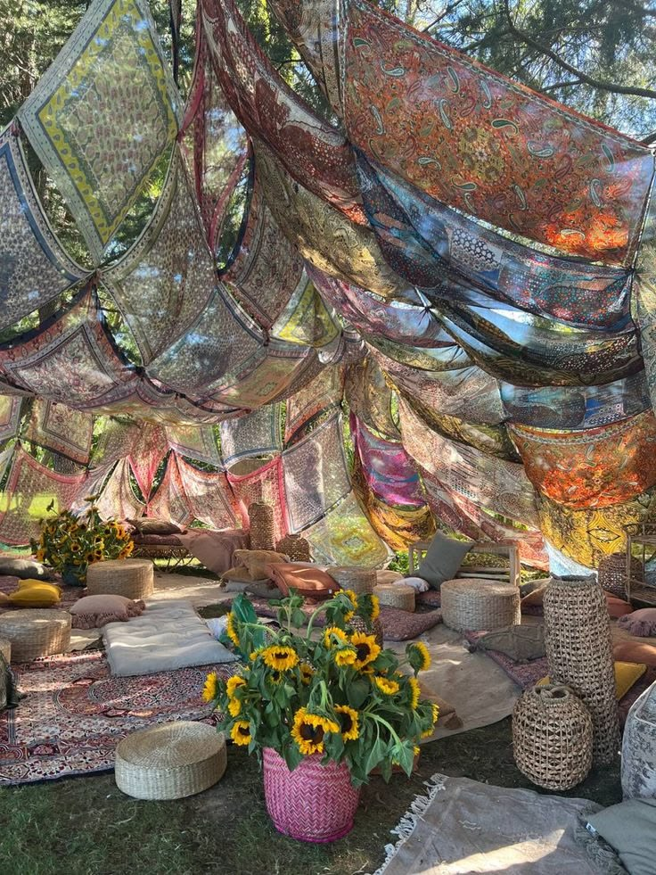
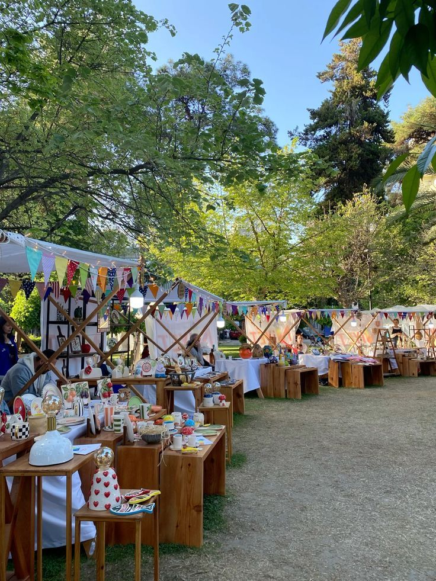

⊹ ⊱ ۞ ⊰ ⊹
Honrando raízes, construindo caminhos.
A Casa Sankofa acredita que cultura, conhecimento e ancestralidade se fortalecem quando são compartilhados. Por isso, promovemos encontros que aproximam pessoas, preservam tradições e incentivam o diálogo entre diferentes expressões culturais e espirituais.
Nossa programação reúne atividades abertas à comunidade, como oficinas artesanais, exposições culturais, palestras, rodas de conversa, encontros sobre ancestralidade e apresentações artísticas.
Cada encontro é pensado como uma oportunidade de aprender, compartilhar experiências e conhecer diferentes formas de expressão. Buscamos criar um ambiente acolhedor, respeitoso e acessível, onde todos possam participar, independentemente de sua origem ou crença.
Os interessados podem acompanhar nossa programação, participar das atividades divulgadas e contribuir voluntariamente para a realização dos encontros. Algumas atividades podem exigir inscrição prévia, conforme a quantidade de vagas disponíveis.

Oficinas e saberes tradicionais

Encontros e rodas de conversa

Exposições e manifestações artísticas
As contribuições são destinadas à aquisição de materiais, organização de oficinas, exposições, manutenção dos espaços e realização de atividades culturais e educativas.
Chave Pix:
doacoes@casasankofa.1889
A Casa Sankofa também abre espaço para pessoas, artistas, pesquisadores, educadores e grupos culturais que desejam compartilhar seus conhecimentos e desenvolver atividades com a comunidade.
Você pode propor:
Nossa equipe avaliará as propostas considerando sua finalidade, contribuição cultural e possibilidades de realização. Estamos abertos a novas ideias e parcerias que fortaleçam nossa comunidade.
casa.sankofa@gmail.com
19 077060-7060
@Casa_Sankofa